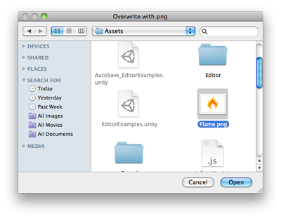

EditorUtility.OpenFilePanel
public static string OpenFilePanel(string title,
string directory,
string extension);
Description 描述
Displays the "open file" dialog and returns the selected path name.
See Also: SaveFilePanel function.

Open File Panel.
using System.IO; using UnityEngine; using UnityEditor;
public class OpenFilePanelExample : EditorWindow { [MenuItem("Example/Overwrite Texture")] static void Apply() { Texture2D texture = Selection.activeObject as Texture2D; if (texture == null) { EditorUtility.DisplayDialog("Select Texture", "You must select a texture first!", "OK"); return; }
string path = EditorUtility.OpenFilePanel("Overwrite with png", "", "png"); if (path.Length != 0) { var fileContent = File.ReadAllBytes(path); texture.LoadImage(fileContent); } } }